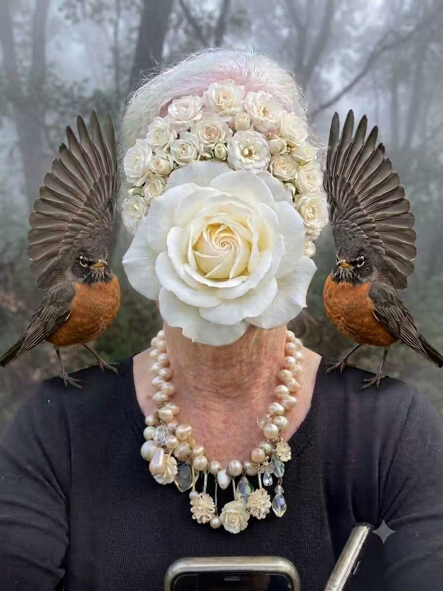

From the Evening
A workshop built through art, conversation, and reflection
We began with contemporary portraits and artworks where the face was hidden, replaced, or symbolically transformed. Participants then moved through a prompt sequence to identify meaningful objects, places, memories, and metaphors before shaping them into images with AI.


The Outputs
Images that became self-portraits through story
The images below were created during the workshop. What mattered was not only what participants made, but the meaning they uncovered while making it.


